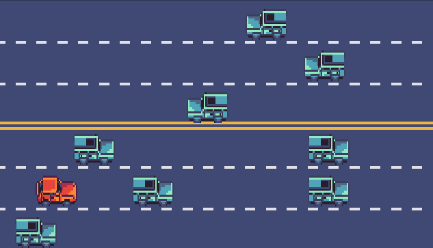

Apprentissage par renforcement
Table of Contents
2 DrAIving School
2.1 Principe
Le but du jeu est de rouler vers l'arrivée le plus vite possible sans faire d'accident. Il y a une autoroute à 3 voies par sens, clairsemée de voitures qui roulent plus ou moins vite selon la voie. La voiture du joueur peut accélérer, freiner, et tourner à gauche ou à droite. Il est important de noter que la voiture du joueur est plus rapide que toute autre voiture, même à vitesse minimale.
2.2 IA
Pour entraîner l'IA, nous avons essayé différents paramètres, différentes perceptions et différentes récompenses et pénalités :
2.2.1 Perceptions
Nous avons doté l'IA d'une perception du monde très locale pour éviter une surcharge d'états différents à gérer. Elle peut donc détecter les obstacles autour d'elle dans des zones de taille différentes.
2.2.2 Score
Pour les pénalités : en cas d'accident, l'IA a une certaine pénalité, peu importe si elle a cogné le trottoir ou une autre voiture.
En revanche, elle a une récompense lorsqu'elle atteint la fin du niveau. Cette récompense est plus élevée quand la course est terminée rapidement, pour encourager l'IA à accélérer quand possible. L'intérêt de ceci est que l'IA devra alors contrôler son accélération et jauger quand il est judicieux de se dépêcher.
2.2.3 Paramètres/Méthodes
Les choix d'actions ont été fait par E-Greedy.
Nous avons pris E proche de 1, et on l'a fait décroître par suite géométrique, par pallier ou non en fonction du E initial (0.99 ou 0.999).
Pour Y, nous ne savions pas exactement comment il fonctionnait avant qu'un professeur ne nous l'explique, nous le prenions alors de manière aléatoire, puis finalement, nous l'avons laissé à 0.99 au vu des conseils donnés.
De même pour S, que nous avons finalement laissé à 0.01.
Pour l'apprentissage, beaucoup ont été réalisés par Q-Learning et quelques autres par SARSA.
2.3 Résultats
2.3.1 IA intéressantes
- Premières IA
Les premiers essais montraient un apprentissage, mais pas dans la direction que nous voulions. Il en résulte une IA suicidaire qui minimise alors son temps de survie.
- Premières IA performantes
Après beaucoup de changements de paramètres, d'entraînements différents, de modifications de codes, nous avons réussi à avoir quelques IA avec un comportement remarquable si comparé aux autres.
2.3.2 Limites des perceptions
Le problème d'avoir des perceptions locales sont qu'elles sont locales : si l'IA est face à un bouchon, elle ne peut savoir s'il y a de la place libre sur les côtés, et ne pensera même pas à y aller. De plus, des perceptions aussi larges que les notres peuvent provoquer des confusions chez l'IA qui peut voir un bouchon même quand 2 voitures sont assez espacées pour que l'IA passe entre.
2.3.3 Limites du jeu
Le premier problème est lié aux perceptions locales de l'IA : si par faute du hasard, il y a un bouchon car les voitures sont toutes alignées, l'IA ne pourra rien faire car son monde est bloqué. Une idée venue un peu tard était de faire des groupements de voitures générées aléatoirement avec comme règle que l'IA peut toujours passer entre. Le problème restait cependant les perceptions locales de l'IA qui ne détectait pas le passage.
